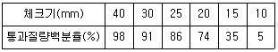
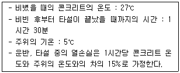
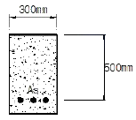

콘크리트산업기사 (2014-05-25 기출문제)
1과목: 콘크리트재료 및 배합
1. 플라이애시를 사용한 콘크리트의 성질에 관한 다음의 일반적인 설명 중 적당하지 않은 것은?
- 플라이애시 중의 미연탄소분에 의해 AE제 등이 분산되는 효과가 있어 소요의 공기량을 연행하기 위한 AE제의 사용량을 줄일 수 있다.
- 시멘트 질량의 20%정도 이상을 플라이애시로 치환하면 알칼리골재반응이 억제된다.
- 습윤양생이 충분하지 못하면 초기강도의 저하 및 동해에 대한 표면열화가 발생하기 쉽다.
- 수화가 충분히 진행되면 치밀한 조직이 가능하기 때문에 해수에 대한 저항성이 커진다.
(정답률: 71%)

2. 콘크리트용 굵은 골재에 대한 설명으로 틀린 것은?
- 굵은골재의 절건밀도는 2.5g/cm3 이상의 값을 표준으로 한다.
- 굵은 골재 중 점토덩어리와 연한 석편의 합은 5%를 초과하지 않아야 한다.
- 필요한 경우 굵은 골재에 대한 내동해성 시험을 수행하여 사용하여야 한다.
- 굵은 골재의 안정성은 황산나트륨으로 3회 시험을 하여 평가하며, 그 손실질량은 10% 이하를 표준으로 한다.
(정답률: 59%)
3. 콘크리트용 고로슬래그 미분말의 품질을 평가하기 위한 시험으로 적합하지 않은 것은?
- 밀도
- 비표면적(블레인)
- 활성도지수
- 전알칼리량
(정답률: 74%)
4. 잔골재 표건밀도 2.60g/cm3, 굵은골재 표건밀도 2.65g/cm3 인 재료를 이용하여 잔골재율 40% 인 콘크리트의 배합설계를 할 때 단위 잔골재량이 624kg인 경우 단위 굵은골재량을 구하면?
- 954kg
- 1017kg
- 1087kg
- 1128kg
(정답률: 75%)
5. 감수제의 사용 효과에 대한 설명으로 옳은 것은?
- 시멘트 입자를 분산시켜 단위수량을 감소시킨다.
- 콘크리트 흡수성과 투수성을 줄일 목적으로 사용한다.
- 응결을 늦추기 위한 목적으로 사용한다.
- 사용량이 비교적 많아서 배합 계산시 고려한다.
(정답률: 70%)
6. 굵은 골재 체가름 시험을 실시한 결과 다음과 같은 성과표를 얻었다. 굵은 골재 최대치수는?

- 15mm
- 20mm
- 25mm
- 30mm
(정답률: 87%)
7. 콘크리트 배합시 물-결합재비에 대한 설명으로 틀린 것은?
- 물-결합재비는 소요의 강도, 내구성, 수밀성 및 균열저항성 등을 고려하여 정한다.
- 제빙화학제가 사용되는 콘크리트의 물-결합재비는 55%이하로 하여야 한다.
- 콘크리트의 수밀성을 기준으로 물-결합재비를 정할 경우, 그 값은 50%이하로 하여야 한다.
- 콘크리트 탄산화 저항성을 고려해야 하는 경우 물-결합재비는 55% 이하로 하여야 한다.
(정답률: 63%)
8. 콘크리트 압축강도의 기록이 없는 현장에서 설계기준압축강도가 30MPa인 경우 배합강도는?
- 40MPa
- 38.5MPa
- 37MPa
- 35.5MPa
(정답률: 78%)
9. 콘크리트용 골재로서 요구되는 성질로 적합하지 않는 것은?
- 골재의 강도는 콘크리트 중의 경화시멘트 페이스트의 강도 이상일 것
- 잔골재는 유기불순물시험에 합격한 것
- 골재의 입형은 편평하고 긴 모양을 가질것
- 잔골재의 염분허용한도는 0.04%(NaCl 환산량) 이하일 것
(정답률: 87%)
10. 고로슬래그시멘트에 대한 설명으로 틀린 것은?
- 고로슬래그시멘트를 사용한 콘크리트는 해수에 대한 저항성이 우수하다.
- 고로슬래그시멘트의 경우 수화열이 높기 때문에 급격한 온도 상승에 유의해야한다.
- 고로슬래그시멘트의 조기강도 발현은 완만하지만 장기강도는 증가한다.
- 고로슬래그시멘트는 매스콘크리트, 해양구조물 등에 사용하는 것이 적합하다.
(정답률: 62%)
11. 시멘트풀의 응결에 대한 설명으로 틀린 것은?
- 온도가 높을수록 응결은 지연된다.
- 습도가 낮으면 응결은 빨라진다.
- 물-시멘트비가 많을수록 응결은 지연된다.
- 분말도가 크면 응결은 빨라진다.
(정답률: 69%)
12. 같은 슬럼프를 얻기 위해 필요한 콘크리트의 배합 조정에 관한 다음의 일반적인 설명 중 틀린 것은?
- 굵은골재의 최대크기를 크게할 경우, 단위수량은 작게 한다.
- 굵은골재의 실적률이 적을 경우, 단위수량은 작게 한다.
- 굵은골재를 쇄석에서 강자갈로 대체할 경우, 잔골재율은 작게 한다.
- 잔골재의 조립률이 적을 경우, 잔골재율은 작게 한다.
(정답률: 40%)
13. 시멘트의 응결시험 장치로 짝지워진 것은?
- 오토클레이브 장치, 길이변화 몰드
- 길모어침 장치, 비카트침 장치
- 흐름 시험기, 비중병
- 비중용기, LA 마모시험기
(정답률: 91%)
14. 콘크리트 배합계산에 고려해야 하며 시멘트 질량의 5%이상 사용하는 재료가 아닌 것은?
- 화산재
- 플라이애쉬
- 규산질 미분말
- 방수제
(정답률: 69%)
15. KS F 2508 로스앤젤레스 시험기에 의한 굵은골재의 마모시험에서 사용시료의 등급이 A인 경우 사용 철구 수와 철구의 총 질량(g)이 맞는 것은?
- 12개, 5000±25(g)
- 11개, 5000±25(g)
- 12개, 4580±25(g)
- 11개, 4580±25(g)
(정답률: 68%)
16. 시멘트에 관한 일반적인 설명으로 틀린 것은?
- 시멘트의 풍화는 대기 중의 수분과 탄산가스와의 반응에 의해 일어난다.
- 비표면적이 큰 시멘트 일수록 수화반응이 빨라진다.
- C3A 성분이 많은 포틀랜드시멘트일수록 화학저항성이 크다.
- 조강성(早强性)포틀랜드시멘트는 일반적으로 C3S의 양이 많고 C2S의 양이 적다.
(정답률: 63%)
17. 콘크리트 1m3을 제조하는데 물-시멘트비가 48.5%이고 단위수량이 178kg, 공기량이 4.5%일 때 이 콘크리트의 배합에서 골재 절대용적은 얼마인가? (단, 시멘트 밀도는 3.15g/cm3이다.)
- 0.66 m3
- 0.68 m3
- 0.70 m3
- 0.72 m3
(정답률: 66%)
18. 철근의 인장시험에 의하여 구할 수 있는 기계적 특성 값이 아닌 것은?
- 연신율
- 단면수축률
- 내력
- 취성파면율
(정답률: 81%)
19. 배합수내의 불순물 영향을 올바르게 나타낸 것은?
- 염화나트륨 : 장기강도 촉진
- 염화암모늄 : 응결지연
- 황산칼슘 : 응결촉진
- 질산아연 : 초기강도 증가
(정답률: 67%)
20. 시멘트의 강도시험 방법(KS L ISO 679)에 의해 모르타르를 제작할 때 시멘트 450g을 사용할 경우 필요한 표준사의 양으로 옳은 것은?
- 1⑤0g
- 1220g
- 1350g
- 1530g
(정답률: 85%)
2과목: 콘크리트제조, 시험 및 품질관리
21. 콘크리트 탄산화에 대한 대책으로 틀린 것은?
- 콘크리트의 다지기를 충분히 하여 결함을 발생시키지 않도록 한 후 습윤양생을 한다.
- 양질의 골재를 사용하고 물-시멘트비를 크게 한다.
- 철근 피복두께를 확보한다.
- 탄산화 억제효과가 큰 투기성이 낮은 마감재를 사용한다.
(정답률: 83%)
22. 콘크리트의 알칼리 골재반응을 유발시키는 요인으로 거리가 먼 것은?
- 골재 중에 유해한 반응광물이 있을 경우
- 시멘트 및 그밖의 재료에서 공급되는 알칼리량이 일정량 이상 있을 경우
- 구조적 구속이 크고, 비교적 온도가 낮을 경우
- 반응을 촉진하는 수분이 있을 경우
(정답률: 92%)
23. 현장 품질관리에 있어 관리도를 사용하려할 때 가장 먼저 행해야 할 것은?
- 관리할 항목을 선정한다.
- 관리도의 종류를 선정한다.
- 이상원인을 발견하면 이를 규명하고 조치한다.
- 관리하고자 하는 제품을 선정한다.
(정답률: 87%)
24. 콘크리트의 받아들이기 품질검사 항목이 아닌 것은?
- 염소이온량
- 슬럼프
- 공기량
- 타설검사
(정답률: 73%)
25. 콘크리트의 제조공정에 있어서의 검사에 관한 설명으로 틀린 것은?
- 시방배합은 공사 중 적절히 실시하는 것이 원칙이다.
- 잔골재의 조립률은 1일 1회 이상 실시한다.
- 잔골재의 표면수율은 1일 2회 이상 실시한다.
- 굵은 골재의 표면수율은 1일 2회 이상 실시한다.
(정답률: 75%)
26. 굳지 않은 콘크리트 중의 전 염소이온량은 원칙적으로 얼마이하로 규정하고 있는가?
- 0.3 kg/m3
- 0.5 kg/m3
- 0.7 kg/m3
- 0.9 kg/m3
(정답률: 90%)
27. 굳지 않은 콘크리트의 블리딩에 대한 설명으로 틀린 것은?
- 분말도가 미세한 시멘트를 사용하면 블리딩은 적게 된다.
- 일반적으로 골재가 클 수록 표면적이 크게 되기 때문에 블리딩은 감소한다.
- 부순골재 콘크리트는 보통콘크리트에 비해 블리딩이 크다.
- AE제를 사용하면 블리딩을 작게할 수 있다.
(정답률: 57%)
28. 압축강도 시험의 일반적인 사항 중 적합하지 않은 것은?
- 공시체는 지름의 2배의 높이를 가진 원기둥형으로 한다.
- 재하속도는 0.06±0.04 MPa 범위 내에서 한다.
- 공시체의 지름의 표준은 100mm, 125m, 150mm 이다.
- 시멘트 캐핑을 할 경우에는 물-시멘트비가 27∼30%인 시멘트 페이스트가 적당하다.
(정답률: 64%)
29. 레디믹스트 콘크리트 공장에서 회수수를 배합수로서 사용할 경우에 대한 설명으로 틀린 것은?
- 슬러지수를 사용하였을 경우 단위 슬러지 고형분율이 3%를 초과하면 안 된다.
- 회수수의 염소 이온량은 250mg/L 이하로 관리한다.
- 회수수를 사용한 경우 모르타르의 압축강도비는 재령 7일 및 28일에서 80% 이상이어야 한다.
- 레디믹스트 콘크리트를 배합할 때 슬러지수 중에 포함된 슬러지 고형분은 물의 질량에는 포함되지 않는다.
(정답률: 65%)
30. 굳은 콘크리트의 역학적 성질에 관한 설명으로 가장 거리가 먼 것은?
- 굳은 콘크리트에 재하하면서 응력-변형률 곡선을 그리면 거의 선형으로 나타난다.
- 탄성계수는 일반적으로 압축강도가 클수록 크게 된다.
- 압축강도용 공시체 표면에 요철이 있는 경우 실제 강도보다 강도가 저하한다.
- 압축강도와 인장강도는 어느 정도 비례한다.
(정답률: 70%)
31. 모집단에 대한 품질특성을 알기 위하여 모집단의 분포상태, 분포의 중심위치, 분포의 산포 등을 쉽게 파악할 수 있도록 막대그래프 형식으로 작성한 도수분포도를 무엇이라고 하는가?
- 산포도
- 히스토그램
- 층별
- 파레토도
(정답률: 83%)
32. 콘크리트 내의 철근부식 유무를 평가하기 위하여 실시하는 비파괴시험이 아닌 것은?
- 질산은적정법
- 분극저항법
- 전기저항법
- 자연전위법
(정답률: 76%)
33. 콘크리트의 휨 강도 시험용 공시체에 대한 설명으로 틀린 것은?
- 공시체는 단면이 정사각형인 각주로 한다.
- 공시체 한 변의 길이는 굵은 골재의 최대 치수의 4배 이상이며 100mm 이상으로 한다.
- 공시체의 표준 단면 치수는 100mm×100mm 또는 150mm×150mm이다.
- 공시체의 길이는 단면의 한 변의 길이의 4배보다 30mm이상 긴 것으로 한다.
(정답률: 50%)
34. 레디믹스트콘크리트(KS F 4009)의 품질규정 중 콘크리트의 종류에 따른 공기량에 대한 설명으로 옳은 것은?
- 보통 콘크리트의 경우 공기량은 4.5%이고, 공기량의 허용 오차는 ±1.5%이다.
- 경량 콘크리트의 경우 공기량은 6.5%이고, 공기량의 허용 오차는 ±2.0%이다.
- 포장 콘크리트의 경우 공기량은 3.5%이고, 공기량의 허용 오차는 ±1.5%이다.
- 고강도 콘크리트의 경우 공기량은 5.5%이고, 공기량의 허용 오차는 ±2.0%이다.
(정답률: 81%)
35. ø100×200mm인 원주형 공시체를 사용한 쪼갬인장강도시험에서 파괴하중이 120kN이면 콘크리트의 쪼갬인장강도는?
- 1.91MPa
- 2.32MPa
- 3.82MPa
- 4.64MPa
(정답률: 67%)
36. 굳지않은 콘크리트의 성질에 관한 설명 중 틀린 것은?
- 워커빌리티(Workability)는 작업의 난이도 및 재료분리에 저항하는 정도를 나타내며, 골재의 입도와 밀접한 관계가 있다.
- 피니셔빌리티(Finishability)란 굵은골재의 최대치수, 잔골재율, 골재입도, 반죽질기 등에 의한 마감성의 난이를 표시하는 성질이다.
- 단위수량이 많을수록 반죽질기는 커지고, 작업성은 용이해지나 재료분리를 일으키기가 쉽다.
- 콘크리트의 온도가 높을수록 반죽질기도 커지며, 공기량에 비례하여 슬럼프값이 커진다.
(정답률: 80%)
37. 콘크리트용 재료의 계량에 관한 설명으로 틀린 것은?
- 계량은 현장배합에 의해 실시하는 것으로 한다.
- 각 재료는 1 배치씩 용적으로 계량하는 것이 원칙이다.
- 1 배치량은 콘크리트의 종류, 비비기 설비의 성능, 운반방법, 공사의 종류, 콘크리트의 타설량 등을 고려하여 정하여야 한다.
- 골재의 경우 1회 계량분에 대한 계량오차의 허용한계는 ±3%이다.
(정답률: 75%)
38. 블리딩 시험용기의 안지름이 25cm이고, 안높이는 28.5cm 이다. 이 용기에 30kg의 콘크리트를 채우고 측정한 블리딩에 따른 물의 총 용적은 200cm3이었다면 블리딩량은 얼마인가?
- 0.27cm3/cm2
- 0.32cm3/cm2
- 0.41cm3/cm2
- 0.53cm3/cm2
(정답률: 69%)
39. 콘크리트 비비기 시간에 대한 설명으로 틀린 것은?
- 비비기 시간은 시험에 의해 정하는 것을 원칙으로 한다.
- 비비기 시간에 대한 시험을 실시하지 않은 경우 그 최소 시간은 가경식 믹서일 경우 1분 30초 이상을 표준으로 한다.
- 비비기 시간에 대한 시험을 실시하지 않은 경우 그 최소 시간은 강제식 믹서일 경우 2분 이상을 표준으로 한다.
- 비비기는 미리 정해둔 비비기 시간의 3배 이상 계속하지 않아야 한다.
(정답률: 96%)
40. 슬럼프 시험의 방법에 대한 설명으로 옳은 것은?
- 슬럼프 콘을 기름 걸레로 닦은 후 평평하고 습한 비흡수성의 평판위에 놓는다.
- 빠른 시간 안에 슬럼프 콘에 시료를 한번에 가득 채운 뒤 다짐을 한다.
- 다짐은 재료분리를 감안하여 10회 안에 끝낸다.
- 슬럼프값은 공시체가 충분히 주저앉은 다음 측정한다.
(정답률: 40%)
3과목: 콘크리트의 시공
41. 콘크리트의 고강도화 방법에 대한 설명으로 틀린 것은?
- 시멘트풀의 강도개선
- 양질의 골재이용
- 골재와 시멘트풀의 부착성 개선
- 단위수량의 증가
(정답률: 70%)
42. 온도제어양생에 대한 설명으로 틀린 것은?
- 양생온도가 낮을 경우에는 양생기간을 길게 한다.
- 주로 한중, 서중 및 매스콘크리트가 대상이다.
- 플라이애시 시멘트나 고로슬래그 시멘트 등을 사용할 때는 보통 포틀랜드 시멘트 사용시 보다 양생기간을 짧게 한다.
- 콘크리트를 친 후 일정 기간 콘크리트의 온도를 제어하는 양생을 온도제어양생이라고 한다.
(정답률: 70%)
43. 터널 등의 숏크리트에 첨가하여 뿜어 붙이는 콘크리트의 응결 및 조기의 강도를 증진시키기 위해 사용되는 혼화제는?
- 감수제
- 급결제
- 지연제
- AE제
(정답률: 84%)
44. 다음 중 공장에서 콘크리트 제품의 양생 시에 주로 이용하는 촉진양생방법에 해당되지 않는 것은?
- 증기양생
- 습윤양생
- 전기양생
- 오토클레이브(autoclave)양생
(정답률: 74%)
45. 한중 및 서중콘크리트에 관한 설명으로 틀린 것은?
- 콘크리트의 배합온도가 높을수록 응결시간이 짧아져 수화반응이 촉진되기 때문에 장기강도가 증가하게 된다.
- 일반적으로 배합온도가 높으면 공기연행이 어렵기 때문에 AE제 사용량이 증가하게 된다.
- 콘크리트의 배합온도가 높으면 동일한 슬럼프를 얻기 위한 단위수량이 증가하게 된다.
- 서중콘크리트는 한중콘크리트에 비하여 콜드조인트(cold joint)가 발생하기 쉽다.
(정답률: 56%)
46. 숏크리트 작업에서 발생하는 분진대책은 분진발생원 억제 대책과 발생된 분진대책으로 구분할 수 있다. 이중 분진발생원의 억제대책으로 옳은 것은?
- 환기에 의한 배출ㆍ희석
- 잔골재의 표면수율의 관리
- 집진장치의 설치
- 양호한 작업환경의 확보
(정답률: 67%)
47. 연직시공 이음부의 거푸집 제거시기는 콘크리트 타설 후 어느정도 경과한 시점에서 실시하는 것이 좋은가?
- 하절기 4∼6시간, 동절기 10∼15시간
- 하절기 7∼9시간, 동절기 8∼10시간
- 하절기 2∼3시간, 동절기 7∼10시간
- 하절기 1∼2시간, 동절기 6∼8시간
(정답률: 77%)
48. 고강도 콘크리트에 대한 설명으로 틀린 것은?
- 보통(중량) 콘크리트에서 설계기준압축강도가 40MPa 이상인 경우의 콘크리트를 고강도 콘크리트라고 한다.
- 경량골재 콘크리트에서 설계기준압축강도가 24MPa 이상인 경우의 콘크리트를 고강도 콘크리트라고 한다.
- 고강도 콘크리트에 사용되는 굵은 골재의 최대 치수는 40mm 이하로서 가능한 25mm 이하로 한다.
- 기상의 변화가 심하거나 동결융해에 대한 대책이 필요한 경우를 제외하고는 공기연행제를 사용하지 않는 것을 원칙으로 한다.
(정답률: 78%)
49. 숏크리트 작업의 일반적인 사항으로 틀린 것은?
- 숏크리트는 빠르게 운반하고 혼화제를 첨가한 후에는 바로 뿜어붙이기 작업을 실시하여야 한다.
- 노즐은 뿜어붙일 면에 직각을 유지하며, 적절한 뿜어 붙이는 거리와 뿜는 압력을 유지하여야 한다.
- 뿜어붙인 콘크리트가 적당한 두께로 되도록 한번에 뿜어 붙여야 한다.
- 리바운드 된 재료가 다시 혼입되지 않도록 하여야 한다.
(정답률: 64%)
50. 특정한 입도를 가진 굵은 골재를 거푸집에 채워 넣고, 그 공극속에 특수한 모르터를 적당한 압력으로 주입하여 만든 콘크리트는?
- 프리플레이스트 콘크리트
- 프리캐스트 콘크리트
- 프리스트레스트 콘크리트
- AE 콘크리트
(정답률: 62%)
51. 다음 중 대규모 혹은 중요한 구조물의 수중콘크리트 타설시 가장 적당한 기계∙기구는?
- 밑열림 상자
- 밑열림 포대
- 트레미
- 벨트컨베이어
(정답률: 85%)
52. 바닥틀의 시공이음의 위치로 적당한 것은?
- 슬래브나 보의 지점 부분
- 슬래브나 보의 경간 중앙부 부근
- 슬래브나 보의 경간 1/4 지점
- 슬래브나 보의 경간 3/4 지점
(정답률: 84%)
53. 유동화콘크리트 제조시 유동화제를 첨가하기 전의 기본배합의 콘크리트를 나타낸 용어로 적합한 것은
- 유동화콘크리트
- 고성능콘크리트
- 베이스콘크리트
- 고유동콘크리트
(정답률: 83%)
54. 수밀콘크리트의 배합 및 시공에 관한 다음의 일반적인 설명 중 틀린 것은?
- 일반 콘크리트보다 잔골재율 및 단위굵은 골재량을 되도록 작게 한다.
- 팽창재를 사용하여 수축균열을 방지한다.
- 콘크리트의 워커빌리티를 개선시키기 위해 공기연행제를 사용하는 경우라도 공기량은 4%이하가 되도록 한다.
- 수직 이어치기 면은 누수의 원인으로 되기 쉽기 때문에 지수판을 사용한다.
(정답률: 60%)
55. 공사를 시작하기 전에 콘크리트의 운반에 대해 미리 충분한 계획을 수립하여야 하는데, 다음 중 계획수립의 검토사항으로 거리가 먼 것은?
- 콘크리트 타설 순서
- 기상조건
- 시공이음의 위치
- 콘크리트의 강도
(정답률: 65%)
56. 공장 제품에 사용하는 콘크리트의 강도는 재령 몇 일에서의 압축강도 시험값으로 나타내는 것을 원칙으로 하는가? (단, 일반적인 공장 제품의 경우)
- 7일
- 14일
- 28일
- 91일
(정답률: 73%)
57. 일반콘크리트의 시공이음부를 철근으로 보강한 경우에 이형철근의 정착 길이는 철근직경의 몇 배로 하는가?
- 5배 이상
- 10배 이상
- 15배 이상
- 20배 이상
(정답률: 50%)
58. 한중콘크리트 시공 시 비빈 직후 콘크리트의 온도 및 주위 기온 등이 아래의 표와 같을 때, 타설이 완료된 후 콘크리트의 온도는?

- 20.⑤℃
- 21.⑤℃
- 22.⑤℃
- 23.⑤℃
(정답률: 69%)
59. 방사선 차폐용 콘크리트의 슬럼프는 작업에 알맞은 범위 내에서 가능한 한 적은 값이어야 한다. 일반적인 경우의 슬럼프 값의 기준으로 옳은 것은?
- 100mm 이하
- 120mm 이하
- 150mm 이하
- 180mm 이하
(정답률: 71%)
60. 팽창콘크리트의 시공관리에 대한 설명으로 잘못된 것은?
- 콘크리트를 비비고 나서 타설을 끝낼 때까지의 시간은 기온·습도 등의 기상조건과 시공에 관한 등급에 따라 1∼2 시간 이내로 하여야 한다.
- 한중콘크리트의 경우 타설할 때 콘크리트 온도는 10℃ 이상 20℃ 미만으로 한다.
- 서중콘크리트인 경우 비비기 직후의 콘크리트 온도는 30℃ 이하, 타설할 때는 35℃ 이하로 하여야 한다.
- 콘크리트를 타설한 후에는 적당한 양생을 실시하며 콘크리트 온도는 20℃ 이상을 10일간 이상 유지시켜야 한다.
(정답률: 75%)
4과목: 콘크리트 구조 및 유지관리
61. 다음 중 인장 이형철근의 정착길이에 영향을 주지 않는 것은?
- 콘크리트의 설계기준압축강도
- 철근의 설계기준항복강도
- 부재의 단면적
- 피복두께
(정답률: 30%)
62. 전기방식 공법에서 외부 전원을 필요로 하지 않는 공법은 어느 것인가?
- 티탄 메시방식
- 유전 양극방식
- 내부 양극방식
- 도전성 도료방식
(정답률: 65%)
63. 반발경도법에 의한 콘크리트 압축강도 추정에서 주로 슈미트 해머를 많이 사용한다. 이 해머 사용 전에 검교정을 위해 사용하는 기구의 명칭은?
- 캘리브레이션 바(calibration bar)
- 스트레인 게이지(strain gauge)
- 테스트 앤빌(test anvil)
- 변위계(displacement transducer)
(정답률: 55%)
64. 현행 콘크리트구조기준에서 고정하중(D)과 활하중(L) 이 작용하는 경우의 기본적인 하중조합으로 옳은 것은?
- U = 1.5 D + 1.5 L
- U = 1.4 D + 1.7 L
- U = 1.3 D + 1.8 L
- U = 1.2 D + 1.6 L
(정답률: 75%)
65. 보강공법 중 연속섬유 시트접착공법의 특징에 대한 설명으로 틀린 것은?
- 섬유시트는 현장성형이 용이하기 때문에 작업공간이 한정된 장소에서는 작업이 편리하다.
- 섬유시트의 박리 또는 부분박리가 발생하는 경우에도 보강효과의 손실이 발생하지 않는다.
- 내식성이 우수하고, 염해지역의 콘크리트구조물 보강에도 적용할 수 있다.
- 일정한 격자모양으로 부착함으로써 발생된 균열의 진전상태 관찰이 가능하다.
(정답률: 53%)
66. 아래 그림과 같은 단면의 단철근 직사각형 보에서 이 단면의 공칭 휨강도(Mn)는? (단, As=3000mm2, fck=27MPa, fy=400MPa)

- 450kN‧m
- 465kN‧m
- 480kN‧m
- 495kN‧m
(정답률: 65%)
67. 철근의 정착에 대한 설명으로 틀린 것은?
- 위험단면에서 철근의 설계기준항복강도를 발휘하는데 필요한 최소 묻힘 길이를 정착길이라고 한다.
- 압축철근의 정착에는 갈고리를 두는 것이 매우 유리하다.
- 압축철근 정착길이는 인장철근 정착길이보다 길 필요는 없다.
- 정착 방법에는 묻힘길이에 의한 정착, 갈고리에 의한 정착, 기계적 정착 등이 있다.
(정답률: 59%)
68. 경간이 20m인 거더에 단면적이 557mm2인 PS강재를 사용하여 양단에 500kN을 긴장하여 보강하고자 할 때, PS 강재에 발생하는 늘음량은? (단, PS강재의 탄성계수는 2×105MPa이며, 긴장재의 마찰과 콘크리트의 탄성수축은 무시한다.)
- 71.8mm
- 76.2mm
- 80.7mm
- 89.8mm
(정답률: 52%)
69. 콘크리트가 동해를 받았을 때, 직접적으로 나타나는 열화현상이 아닌 것은?
- 중성화
- 미세균열
- 박리·박락
- 팝아웃(pop-out)
(정답률: 80%)
70. 폭(b)=500mm, 유효깊이(d)=600mm, 인장철근량(As)=2026.8mm2인 단철근 직사각형보의 등가직사각형 응력블록의 깊이(a)를 구하면? (단, fck=24MPa, fy=350MPa 이다.)
- 50mm
- 55mm
- 60mm
- 70mm
(정답률: 87%)
71. 콘크리트의 내화성에 관한 설명으로 가장 부적당한 것은?
- 콘크리트는 내화성이 우수하여 600℃ 정도의 화열을 받아도 압축강도의 저하는 거의 없다.
- 석회석이나 화강암 골재는 특히 내화성을 필요로 하는 장소의 콘크리트에 사용하지 않도록 한다.
- 화재피해를 받은 콘크리트의 중성화속도는 화재피해를 받지 않은 것과 비교하여 크다.
- 화재발생시 급격한 가열, 부재단면이 얇거나 콘크리트의 함수율이 높은 경우는 피복콘크리트의 폭렬이 발생하기 쉽다.
(정답률: 90%)
72. 콘크리트 초기균열 중 침하균열을 방지하기 위한 대책으로서 틀린 것은?
- 타설속도를 빠르게 한다.
- 단위수량을 될 수 있는 한 적게 한다.
- 슬럼프가 작은 콘크리트를 잘 다짐해서 시공한다.
- 1회의 타설높이를 작게 한다.
(정답률: 75%)
73. 다음 중 콘크리트구조물의 보강 방법으로 거리가 먼 것은?
- 수지주입공법
- 강판접착공법
- 세로보 증설공법
- 탄소섬유 접착공법
(정답률: 62%)
74. 다음 중 철근 피복두께의 역할이 아닌 것은?
- 철근 부식 방지
- 단면의 내하력 증대
- 부착 강도 증진
- 내화성 증진
(정답률: 66%)
75. 콘크리트 구조물의 외관조사시 외관조사망도에 기입하지 않는 것은?
- 균열 형태
- 균열 깊이
- 균열 길이
- 균열 폭
(정답률: 92%)
76. 보의 폭이 400mm, 보의 유효깊이가 500mm인 직사각형 단면을 가지고, 지간이 4m인 단순보에 자중을 포함한 고정하중 15kN/m와 활하중 20kN/m가 작용하고 있다. 이 보의 위험단면에 작용하는 계수전단력은 얼마인가?
- 52.5kN
- 70.0kN
- 75.0kN
- 100.0kN
(정답률: 37%)
77. 단면폭 400mm, 유효깊이 700mm인 직사각형 단순보에서 콘크리트가 부담하는 전단강도 (Vc)는? (단, fck=30MPa, fy=400MPa)
- 762kN
- 564kN
- 394kN
- 256kN
(정답률: 52%)
78. 콘크리트 표면에 발생한 미세한 균열은 봉합재료를 주입하여 실(seal, 봉합) 할 수 있는데, 이 때 콘크리트 내부의 수분을 확인할 수 있을 경우 가장 많이 사용되는 봉합재료는 무엇인가?
- 멜라민수지
- 폴리에스테르수지
- 에폭시수지
- 페놀수지
(정답률: 81%)
79. 다음 중 옹벽을 설계할 때 고려해야 하는 안정조건이 아닌 것은?
- 전도에 대한 안정
- 활동에 대한 안정
- 지반지지력에 대한 안정
- 벽체 좌굴에 대한 안정
(정답률: 71%)
80. 콘크리트 구조물의 외관조사 중 육안조사에 의한 조사항목에 속하지 않는 것은?
- 균열
- 철근노출
- 부재의 응력
- 침하
(정답률: 87%)
플라이애시는 미세한 입자로 구성되어 있어서 콘크리트 내부에 형성되는 미세한 공극을 채우고, 이를 통해 콘크리트의 밀도를 높이고 강도를 향상시킵니다. 또한, 플라이애시 중의 미연탄소분에 의해 AE제 등이 분산되는 효과가 있어 소요의 공기량을 연행하기 위한 AE제의 사용량을 줄일 수 있습니다.
시멘트 질량의 20% 이상을 플라이애시로 치환하면 알칼리골재반응이 억제되고, 습윤양생이 충분하지 못하면 초기강도의 저하 및 동해에 대한 표면열화가 발생하기 쉽습니다. 따라서, 적절한 수분과 시간을 제공하여 수화를 충분히 진행시키면 치밀한 조직이 가능해져 해수에 대한 저항성이 커집니다.